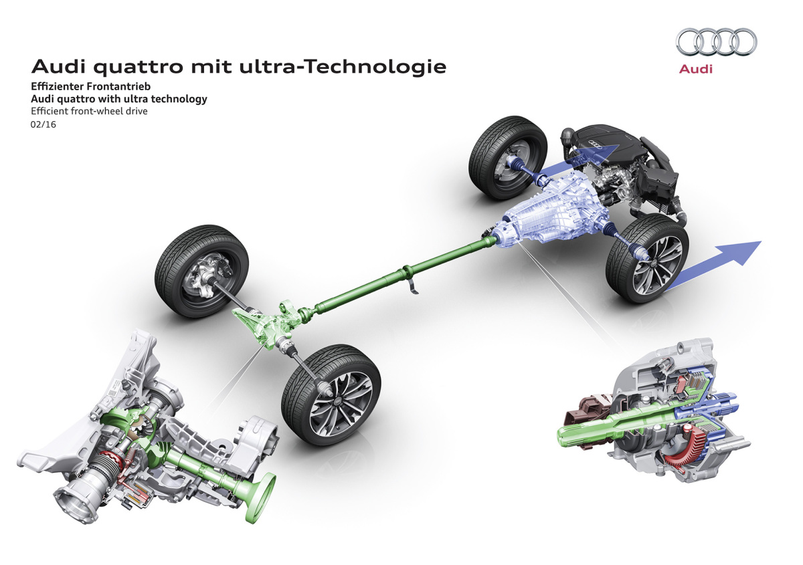

Základem identity značky Audi je filozofie „Vorsprung durch Technik“, tedy „náskok díky technice“. Tento přístup se odráží ve všech oblastech vývoje vozů – od motorů a podvozků až po infotainment a bezpečnost. Audi bylo vždy považováno za technologického inovátora mezi prémiovými značkami. Klade důraz na precizní inženýrství, detailní zpracování a chytré využití elektroniky. Díky tomu si značka udržuje pověst výrobce automobilů s vysokou úrovní technické dokonalosti.
Jednou z nejvýznamnějších technologií, kterou Audi uvedlo na trh, je pohon všech kol quattro. Poprvé se objevil v roce 1980 a okamžitě se stal legendou. Tento systém výrazně zlepšil trakci, stabilitu i bezpečnost vozidel, a to jak na silnici, tak v závodních podmínkách. V průběhu let Audi vyvinulo různé verze quattro – od mechanických po elektronicky řízené systémy s aktivním rozdělováním točivého momentu. Pohon quattro dnes představuje jeden z nejdůležitějších symbolů značky.
Podstránky: Technologie 1 | Technologie 2 | Technologie 3